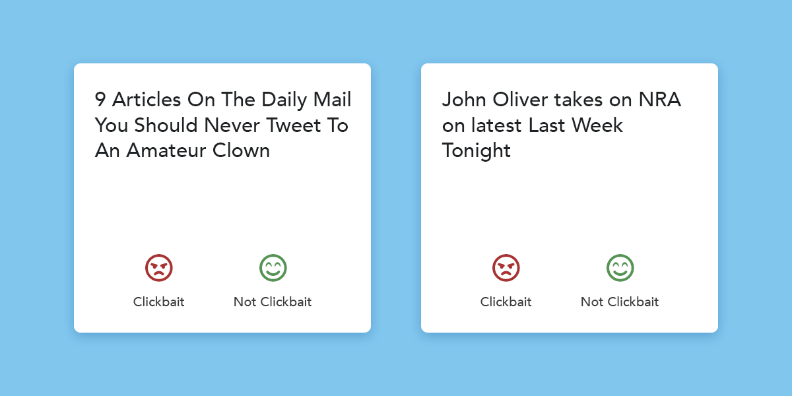

Introduction
A big part of consuming information online in today's is identifying misinformation and distinguishing opinion from fact. Since a large portion of revenue for online news publications comes from advertising, which in turn, is dictated by clicks and impressions, there is a huge incentive for these publications to mislead and manipulate users into clicking on their content, without the content being enriching enough or simply worth the users' time. Clickbaits are often considered the gateway into misinformation and yellow journalism, because they over-promise on their content and then under-deliver. This project involved building a model to identify and flag clickbait headlines, and finding ways it can be integrated into common news consumption settings, for instance, through social media.
Gathering and labelling data
One of the challenges with this being a relatively unexplored problem was the lack of datasets available for clickbait headlines. We gathered data by extracting headlines from the Twitter API, and building a simple Node+Angular application to manually distinguish clickbait headlines from non-clickbait headlines, and automatically maintain two separate data files that we could use to train our model.

We then used this data to train a convolutional neural network, originally developed to do sentence classification to work as a spam filter.
Deploying the API
The TensorFlow model is connected to a Flask web application, and deployment steps are outlined in the README.md file of the GitHub repository.
Future
We have several ideas of applications that can be built using this API. We want to find a way that naturally integrates into how a user would consume information on social media, and we're now in the process of developing a Google Assistant prototype that can use Android's accessiblity toolkits to overlay on top of social media applications such as Twitter and Facebook, and flag clickbait headlines.